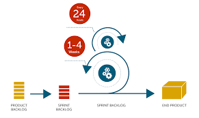

Project Management: The evolution and its way forward

In today’s dynamic business environment, where half of the organizational activities are wrapped up in projects, the project management has been a focal point for all the projects. The role of the project management has evolved over the years and they are being largely driven by the changing business landscape. Based on the organization’s changing goals and strategic objectives, the “ask” from a Project manager has changed and grown across the industries. With the changing dynamics among various external & internal stakeholders, there has been a greater focus on organizational effectiveness and efficiency which has led to the introduction of various project management practices, processes and tools only to optimize the management of organizational resources. Even after adopting such an instrumental role of project management by almost all organizations, research says that most projects still fall short on any or all of their project parameters: Schedule, Budget and Quality. And even if they meet all of them, they fail to meet their business objectives. Hence, it is inevitable for an organization to understand, adopt and apply the project management practices in such a way that helps them achieve strategic goals. The current trend in project management is even more challenging and they are expected to take up a much larger role in an organization than they used to, which we would cover in this article later.
The evolution of Project Management: While there were times when the project activities were executed in an organized way, the formal introduction of project management as a technique and tool was done only after 1950s. There were major complex projects that were executed across industries which demanded new approaches to project management. The famous Transcontinental Railroad project and the Polaris Missile project in US were some of those complex projects that were categorized by high uncertainty given the daunting task of accurately estimating its timelines and cost were involved. That’s when Gantt charts were invented by Henry Gantt. With its task bars and milestone markers, the sequence and duration of the tasks were outlined. With its growing popularity, Gantt charts were considered as the most adopted tool over the decades. It helped planning of the project through phases. However, based on the different scenarios around, it became challenging to estimate the completion times of the project. That’s where Programme Evaluation Review Technique (PERT) came into play which helped estimating the time based on the most optimistic, pessimistic & most likely scenarios. To have a more definitive approach than PERT for project planning and scheduling, Critical Path Method (CPM) was developed. Both PERT and CPM was widely adopted by many organizations to carry out their project planning effectively.
While these were being adopted in 1960s which was the era where the focus was majorly on scheduling and coordinating activities, the next decade of 1970s was on Teamwork and increased co-operation between team members. Organizations realized the need of integration where the team works as one entity and focus was on the greater output as a whole. That’s where roles were defined and team members were asked to follow processes.
The next generation of 1980s saw the challenge of taking stable decisions by management to isolate the organization from the uncertainties surrounding it. It was all about managing risks effectively. That was also the time when the Personal Computers (PCs) market was setup along with its network connectivity. This made various low-cost project management software and tools accessible to all the organizations.
The rapid cycle of changing business and customer demands in 1990s saw time-to-market as one of the most important driving force and hence organizations started figuring out the ways to reduce the lead time so as to make their product relevant at all times. That’s when they adopted the collaborative approach over sequential one, where outcome and processes are thought upon simultaneously and not sequentially. That’s when even agile mode of delivery was crafted and organizations felt the need to adopt the same.
The future outlook of Project Management: The traditional project management has always been restricted to getting the job done and this field was always looked through the prism of the project delivery only. Now with changing business environments and global competition, the focus has expanded from a mere successful product delivery to achieving business results. It has become imperative for the project manager to think beyond having just smooth delivery. There is a clear distinction between operationally managed projects and strategically managed projects. Project Managers need to ensure that their product deliveries are in a complete alignment with the business goals and objectives. They need to strategically manage their products and would need to take into account the changing customer needs, their competitive advantage and the potential market success rather than sticking to the original scope and delivering it. It is important for them to review all the external parameters continuously to make sure their deliveries help organization achieve their business goals and gain that competitive edge. They are expected to have a long-term strategic perspective that creates a sustainable business value to their customers. They are also being expected to drive company’s profitability, boost ROI and have a positive impact on team’s efficiency and productivity. In today’s world, there are no lines drawn between any of the business functions like Product team, Tech team and Project Management team. The expectation is they are a unified team focused on creating better business outcomes.
Another misconception in this field of project management is that there is a given set of methodologies and frameworks that needs to be followed, regardless of the kind of the project. There is no “one-size-fits-all” approach. Organizations need to adopt the right tailored approach for the right projects. The Projects executed in defense field could be different to that of IT. Software projects could be handled in a different way than the hardware projects. The reason why project category plays an important role here in identifying the right project management approach is because they differ their organizational purposes in many ways like strategic and capability alignment, difference between projects and ongoing operations and various other factors. Even within an organization, there could be various teams following their own style of executing the projects based on many factors like team size, business domain complexity, technical complexity and other geographical factors (Working remotely vs co-located). Although they follow the same scrum framework, the teams are allowed to choose their own way of working (WoW) and have a buffet of practices/strategies to choose from while ensuring that the enterprise-level governance strategies are being complied with. That is what Disciplined Agile framework is all about and this would be even more relevant in the times to come.
Conclusion: So the role of a Project management has come down a long way in its evolution and with the advent of new technology and other ever-changing business factors, this role will continue assuming the larger scheme of responsibilities in any given organization. Their adeptness and astuteness in managing projects blended with strong leadership skills will not only help them to build innovative ideas but also increases their ability to quickly react to the ever-changing needs within their industry. This would help businesses to always stay one notch ahead in their market segment and keep them insulated from any kind of potential economic adversities.
Thanks a lot for reading and feel free to comment.